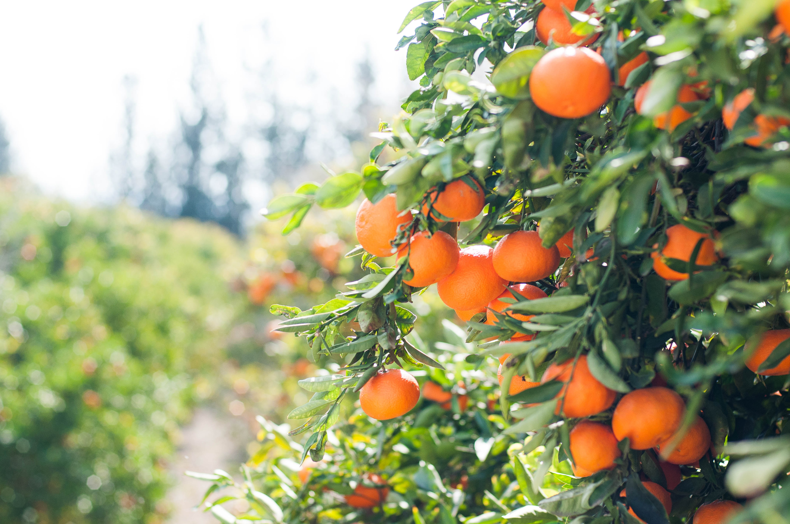

About Oranges
Oranges are a delicious and nutritious citrus fruit known for their juicy flavor and high vitamin C content. They are one of the most popular fruits in the world and can be consumed fresh or used in various dishes and beverages.
Steps to Grow Oranges
- Choose a sunny location with well-draining soil.
- Plant orange tree saplings or grow from seeds.
- Water the orange tree regularly, especially during dry periods.
- Fertilize the tree with a balanced citrus fertilizer.
- Prune the tree to remove dead or diseased branches.
- Protect the tree from pests and diseases through proper care.
- Harvest ripe oranges when they are vibrant in color and easy to peel.
Extra Information
Oranges come in various varieties, including Navel, Valencia, and Blood oranges, each with its unique taste and characteristics. They are not only a great source of vitamin C but also provide essential nutrients and antioxidants that promote good health.